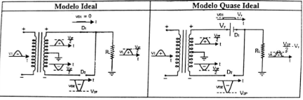
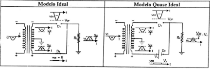
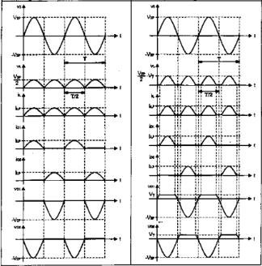

Retificador Onda Completa Derivação Central
O retificador de onda completa emprega dois diodos, ao invés do retificador anterior. Neste circuito, utiliza-se um derivado central aterrado no secundário do transformador, gerando uma tensão defasada de 180°. O valor de pico dessa tensão é equivalente à metade da tensão total de pico.

Similar ao funcionamento do retificador de meia onda, nos semiciclos positivos das tensões V1 e V2a, o diodo (D1) entra em condução. Contudo, o segundo diodo (D2) permanece não condutor devido à sua polarização inversa. Essa característica destaca a importância do controle da polarização para o adequado funcionamento do circuito.
No semiciclo negativo das tensões V1 e V2a, o primeiro diodo (D1) não conduzirá, enquanto o segundo diodo conduzirá. Essa dinâmica é crucial para a eficiência do circuito, assegurando que a corrente flua de acordo com a polarização dos diodos em diferentes fases do ciclo de alimentação.
Observação: A tensão de pico reversa no sistema é V2p. A frequência da tensão de carga é o dobro da frequência da tensão no transformador primário. Esses parâmetros são cruciais para compreender a operação eficiente do sistema, destacando a relação entre a tensão reversa e a frequência, fundamentais para o correto dimensionamento e funcionamento do circuito.
